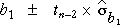

Confidence interval for the slope
The slope of the least squares line, b1, is a good estimate of the normal linear model's slope, β1, and the error in this estimate has a normal distribution,
error in estimate of β1 =
The estimate b1 has probability 0.95 of being within 1.96 standard deviations of β1, suggesting a 95% confidence interval of the form

Unfortunately the standard error depends on σ and therefore cannot be determined exactly. However we can obtain an approximation

If this approximation is used, the constant 1.96 must be replaced by a larger value, tn-2, which is obtained by looking up t-tables with (n - 2) degrees of freedom.
A 95% confidence interval for the slope is  |
Most statistical software will evaluate b1 and its standard error for you when you fit a normal linear model, so it is fairly easy to evaluate the confidence interval in practice — you will not need to use any of the formulae above!
Cancer deaths and radiation
Consider again the cancer death rates from regions of Oregon downstream from the Hanford Atomic Energy Plant.
Since there are n = 9 data points, we look up t tables with 7 degrees of freedom to get the value 2.365. A 95% confidence interval for the slope is therefore

In words, we are 95% confident that the expected number of deaths per 100,000 is between 5.9 and 12.6 higher for each unit increase in the exposure index.
| Warning: These data are observational, not experimental, so it would be wrong to conclude from these data alone that radiation seepage from the plant caused the increase in deaths. The 'exposure index' depends on distance down the Columbia River from the plant (among other factors) and there could be other environmental changes downstream that also affect cancer deaths. |